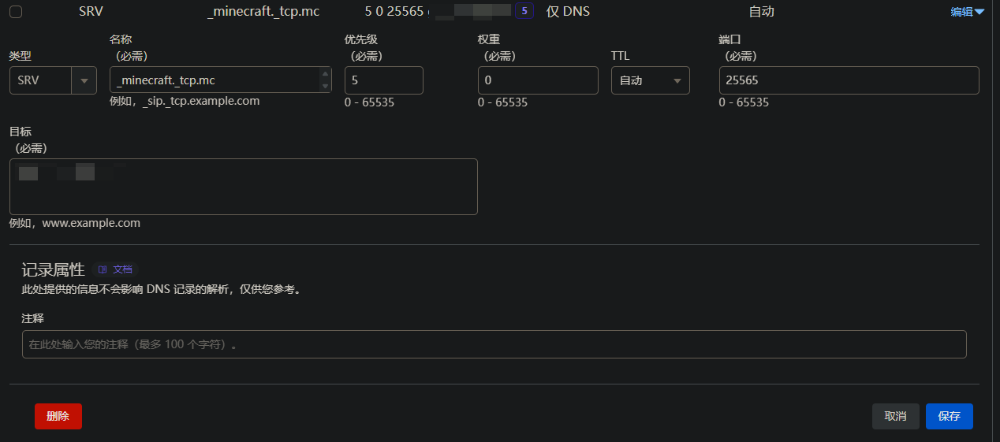

SRV隐藏端口号[仅限java版]
如何隐藏的端口号，使得域名解析结果不显示端口号？
解决方案：
-
步骤一： 您必须要有一个自己的域名,购买域名的地方您可以自己选择，比如阿里云、腾讯云、GoDaddy等。这里以腾讯云为例.
https://wanwang.aliyun.com/domain/searchresult
-
步骤二： 购买完域名之后您可以选择转Cloudflare这样的厂商,当然您也可以不去转,接下来您需要前往DNS解析的地方添加记录,先添加一个A解析记录或者AAAA解析记录并且记下来名字,比如您买的域名是example.com,则您应该创建一个A解析记录可以为a.example.com解析您的ipv4地址,然后新建一个SRV记录按照下图填写

图示
-
步骤三： 保存等待记录生效然后您就可以用mc.example.com让别人连接了,而不是mc.example.com:25565
注意事项：
A解析是ipv4记录AAAA解析是ipv6记录注意不要填写错了
如果您使用的端口不是2556则您需要把端口更改成您自己的端口
确保名称是用的
_minecraft._tcp.
这里tcp.的后面可以添加您希望的连接所用的前缀,比如tcp.mc就是用mc.example.com连接